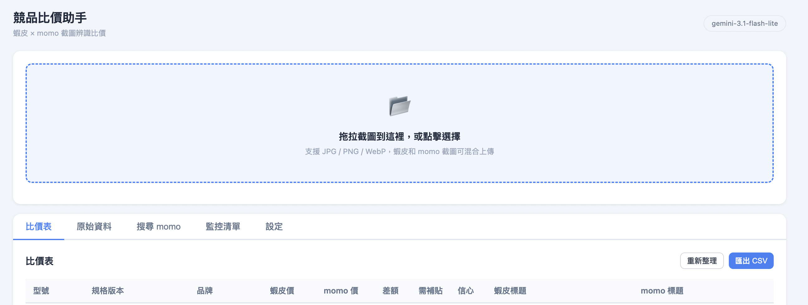
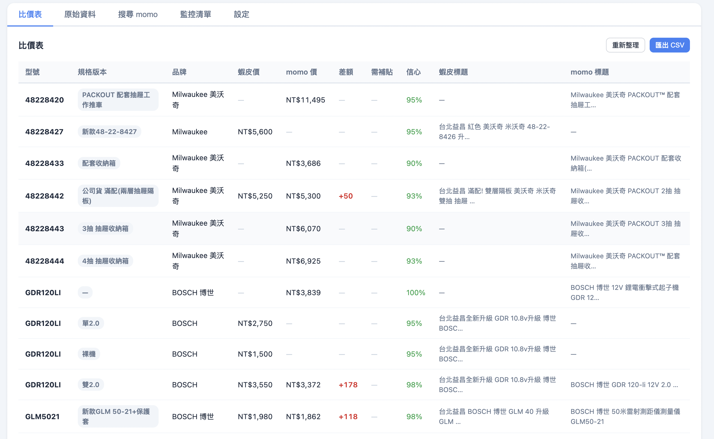
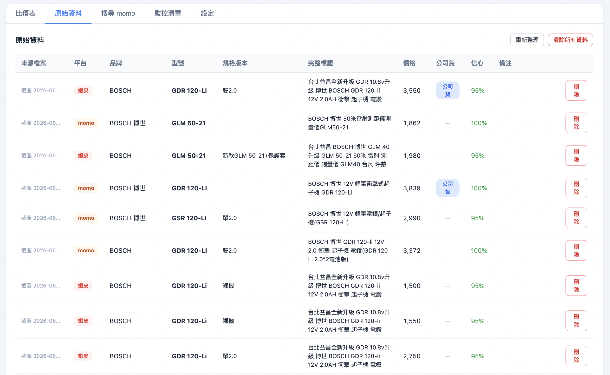

Competitor Price Tracker
A screenshot-in, table-out tool that turns competitor product pages into structured pricing data. It replaces hours of manual model-by-model comparison during category subsidy planning.
Competitor sites block scrapers, so pricing data only exists as screenshots.
During my time in category management at Shopee, one recurring task was benchmarking competitor prices for power tools before setting subsidy strategy. The competitor's site actively blocks automated requests — no public API, no scrapable listing pages, and the anti-bot layer flags anything that isn't a real browser session. The only sanctioned way to see a price was to open the page yourself and take a screenshot.
That constraint framed the entire tool. Instead of trying to fight the block, the workflow accepts screenshots as the source of truth and moves the labor problem to the next step: extracting structured data from them.
Why It Was Worth Building
Power tools are a long-tail SKU category.
A single brand carries dozens of overlapping SKUs — same model number in bare-tool, single-battery, dual-battery, and kit variants, each with its own price point. Comparing one competitor across even a narrow segment meant opening 30–50 product pages, copying model numbers into a spreadsheet, and hand-typing prices for each variant.
The failure mode was not the individual screenshot. It was doing it at scale, weekly. Once the volume crosses a threshold, transcription errors creep in, prices go stale between refreshes, and the analyst starts making decisions from an outdated sheet. The tool exists to remove that transcription step entirely.
Architecture
How It Works
The user drops screenshots into the browser and a four-stage pipeline handles the rest. Each screenshot flows through vision extraction, normalization, and storage before showing up in the comparison table.

The upload page: one drop zone, five tabs, and a badge showing the active Gemini model.
Key Product Decisions
Three Choices Worth Explaining
A vision model, not OCR
OCR can read the pixels off a product page. Reading the text and understanding the layout are different problems. On a real listing, "M18FID3" and "NT$8,990" are just two strings on a canvas; nothing in the raw text tells a downstream system which string is the model number and which is the current sale price (as opposed to the crossed-out MSRP or a sibling variant).
The prompt handed to Gemini Vision does that assignment explicitly. It defines three page archetypes ("price-table style" for momo, "button-select style" for Shopee where only the highlighted variant's price is valid, and "no variants"), and instructs the model on how many rows to return for each case. The output is a JSON array with a fixed 15-field schema: platform, brand, model, normalized model, variant, variant key, full title, price, currency, specs, official-import flag, confidence, and notes. That structure lets the parsing step downstream be strict rather than heuristic.
What OCR-plus-regex would have needed: a per-site parser, updated every time the layout shifts. The vision model absorbs that instability.
Screenshot upload as the primary workflow
The obvious question is why the tool doesn't just scrape the competitor site directly. The answer is that "just scrape" isn't available: the target site's anti-bot measures make automated collection unreliable at best and against terms of service at worst. Building around that constraint — rather than fighting it — kept the project small, legal, and dependable.
A useful side effect: the screenshot workflow generalizes to any e-commerce site without any site-specific parser. When the category expanded from power tools to another vertical, no code changed. The analyst just dropped in different screenshots.
CSV output for downstream analysis
The tool ends at "structured, comparable data." It deliberately doesn't try to be the analyst's final workspace. Category strategy work always lives in a spreadsheet: subsidy calculations, margin models, cross-referencing against internal sales data. Forcing that back into a bespoke UI would just add friction.
Every comparison view is one-click exportable to CSV with a UTF-8 BOM so Excel opens it in Chinese without mojibake. The tool's job is to be the fastest step in someone else's analytical process. Downstream analysis stays where it already lives.

The compare table: one row per (model + variant), platforms as columns, with difference and subsidy needed inline. Export to CSV lives in the top-right.
Vision Extraction Design
What The Model Is Actually Asked To Do
The prompt is the whole product. It's what makes Gemini return a usable JSON row instead of a paragraph of prose. Six fields do the heavy lifting.
page_type
The model first classifies the layout: price-table (all variants priced), button-select (only the highlighted one is priced), or no-variants. This decides row count.
model_id
Raw model as printed on the page, e.g. "M18 FID3". The single most important field for downstream matching.
model_id_normalized
Uppercased, stripped of spaces and punctuation (e.g., "M18FID3"). This is the key used to group across platforms.
variant_key
Canonical form for battery configuration: 裸機, 單2.0, 雙5.0, 2.5+5.0. Prevents "single battery" and "1-battery kit" from being treated as different variants.
price
Current sale price only, stripped of NT$ / $ / commas. Crossed-out MSRPs are explicitly excluded in the prompt.
confidence + notes
A 0–1 self-rated score, plus a free-text note for anything ambiguous. Rows with low confidence surface in the UI for human review before saving.
parse_error flag so it appears in the UI as "needs manual entry" — never silently dropped.

Every row after extraction: platform, brand, model, variant, price, and a confidence score. Anything below ~90% is an obvious review candidate.
Honest Limits
What It Doesn't Do Well
Screenshot quality is a hard floor
Low-resolution or partially cropped screenshots (where the price element got cut off, or the variant label is behind a hover state) produce either wrong extractions or low-confidence rows that need manual fixing. The tool surfaces confidence scores so bad rows are visible, but it can't recover data that wasn't in the image.
Non-standard layouts still slip through
The three page-type archetypes cover Shopee, momo, and most Amazon listings well. Independent brand sites with heavily custom layouts (long-scroll pages, spec tables mixed with marketing copy) sometimes get parsed as the wrong archetype. When this happens the row lands with a low confidence score and a note flagging the ambiguity.
Cross-platform matching relies on the model number being visible
Comparison rows are keyed on model_id_normalized. If a listing hides the model in an image (common for generic no-name products), it won't group with matching listings from other platforms. This is by design — silent fuzzy matching would be worse than no match — but it means unbranded SKUs need manual reconciliation.
The tool is not a real-time price monitor
Because it depends on manually captured screenshots, prices are only as fresh as the last upload. It's built for weekly subsidy planning; real-time flash-sale monitoring is out of scope.
Stack & Methods
Tools Used
- Python 3.11
- FastAPI
- Gemini Flash (Vision)
- SQLite
- Pillow (image compression)
- Server-Sent Events
- Vanilla JS frontend
- CSV / UTF-8 BOM export
Next